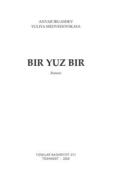

BYIkkinchi jahon urushida halok bo'lgan bir yuz bir o'zbek jangchisi haqidagi tarixiy roman.
Roman Ikkinchi jahon urushi yillarida Amersfort konslagerida fojiali taqdirga duch kelgan bir yuz bir o'zbek jangchisining mardona kurashi haqida hikoya qiladi. Asar tarixiy voqealarga asoslangan bo'lib, qahramon askarlarning fashizmga qarshi ko'rsatgan matonati va ularning xotirasiga bag'ishlangan.